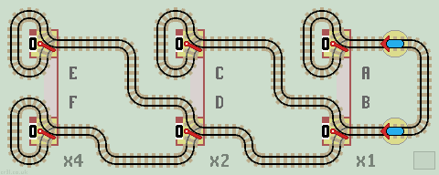
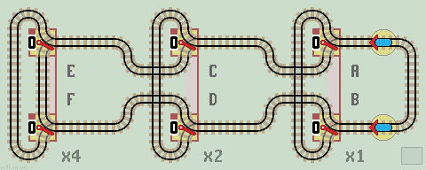
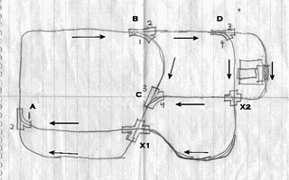
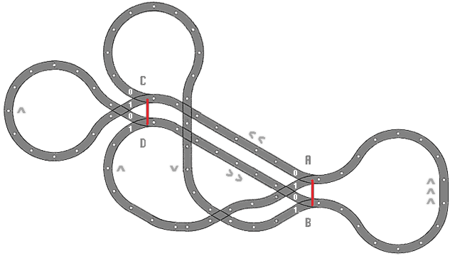
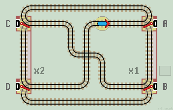
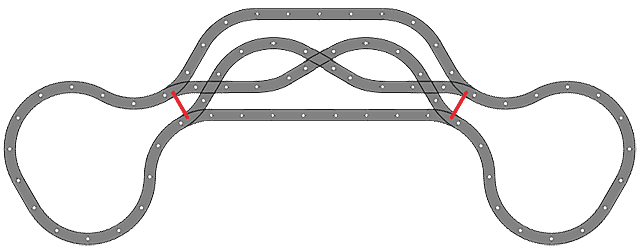
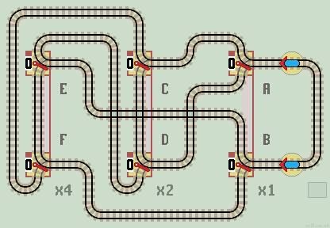

Auto Switching Layouts
Here, we'll look at some interesting auto switching layouts. These achieve long train runs without human intervention. The train switches the points as it traverses the layout. They are not functions, the train is in a closed circuit and loops forever. No sprung points are used. Each circuit is APV -all points visited.
There is further discussion on the Eurobricks forum pages.
Two Lazy Points
There is only one interesting circuit (as shown on Points page). The train covers all the track, and all the track is traversed in both directions.

|
| Click layout to pause/run train | Click points to switch 0/1 | Click start circle to reset train/points |
The two lazy points cycle through the Gray ode sequence: 00, 01, 11, 10.
Auto Run Length
This is a measure of the complexity, (or interest) of a layout. To return all points and the train to their starting positions, a total of 8 track sections (or 8 points) are traversed by the train.
We say this layout has an auto run length of 8 steps, with 4 points switched by the train. This is written as 8/4.
Any layout with two points always has 3 sections of track. So some tracks are used more than once. Indeed, the central track is traversed 4 times and each loop twice.
Pair of Linked PointsWe can bend the layout round and link the two lazy points as shown. The central track is traversed twice as each loop is traversed once. The circuit has an auto run length of 4 with 2 points switched by the train, so 4/2. |
|

Connecting in Series
We can connect circuits together, one after the other in series, by merging the central track with a loop from the next circuit. This produces a 2:1 gear ratio as the central track is traversed twice as each loop is traversed once. Three connected circuits look like this:
| 
|
| Click layout to pause/run train | Click points to switch 0/1 | Click start circle to reset train/points |
This produces an auto run length of 28 steps with 8 sets of points switched by the train. Points D and B are passive. The auto run sequence of 28/8 is:
Entries in bold indicate the point is switched by the train. |
|
Labelling these as x1, x2, x4 as normal we can see the circuit does not behave as a counter. Instead, the circuit produces Gray Code cycling through all 8 possible positions.
Here is an alternate layout for a pair of linked points. Again, the central track is traversed twice as each loop is traversed once. It produces the same auto run length of 4 with 2 points switched by the train, so 4/2. |
|
Connecting 3 circuits in series produces the following layout:
| 
|
| Click layout to pause/run train | Click points to switch 0/1 | Click start circle to reset train/points |
This also produces an auto run length of 28 steps but with 14 sets of points (instead of 8) switched by the train. Points E and C are passive. The auto run sequence of 28/14 is:
Tabulating the steps in bold shows more clearly the 14 cyclic steps. Decimal values of 1 and 5 are repeated twice and values 3 and 7 three times. Using the second starting point, sends the train 'round the other way', producing the same switching sequence in reverse. |
|
The auto run length is given by the formulae: 4 (2^c -1), where c is the number of circuits (pairs of linked lazy points) connected in series.
Two Pairs of Linked Points
Either of the above circuits can be reduced to two pairs of linked points, giving an auto run length (from the above formulae) of 12. There are also a few alternative auto switching layouts.
Paul Race describes a maximum run 'Automated Switching Layout' which was constructed for Christmas shows and shop window displays in the 1940's. Read more at Big Indoor Trains™.
A hand drawn diagram of the layout shows the two pairs of linked lazy points A-B and C-D. The train starts in either direction at the station on the right. It passes through a total of 10 points before all are returned to their original position. |
 |
Here is the same circuit redrawn as an interactive layout.

|
| Click layout to pause/run train | Click points to switch 0/1 | Click start circle to reset train/points |
Auto run sequence = A0 C0 B1 A1 D1 B0 A0 C1 D0 B0.
How it works
This produces quite a 'monkey-puzzle' of a layout. Ten sections of track are traversed before all points and the train return to their initial start positions. So this circuit has an auto switching length of 10, with 4 points switched.
Using Duplo track the layout looks like this:

The 10 chevrons show the number of times and the direction each track is traversed. See Duplo page for a Duplo layout.
This layout below has a slightly longer auto run length of 12. The pair of points A-B has been drawn reflected, making the layout more symmetrical.
| 
|
| Click layout to pause/run train | Click points to switch 0/1 | Click start circle to reset train/points |
Auto run sequence = A0 C0 B0 A1 D0 C1 B1 D1 A1 B0 C0 D0.
This layout below requires 8 steps to return points and train to their original starting positions. The loco starts heading down so all points can begin at 0.

|
| Click layout to pause/run train | Click points to switch 0/1 | Click start circle to reset train/points |
Auto run sequence = B0 C1 D1 B1 A1 D0 C0 A0.
It can be built with Duplo as below.

If one pair of points is manually switched, the train effectively reverses direction and traverses the circuit in reverse order.
Three Pairs of Linked Lazy Points
Layouts are now getting quite big to build in Duplo. This circuit has 3 pairs of linked points. The auto run length is 24 steps.

|
| Click layout to pause/run train | Click points to switch 0/1 | Click start circle to reset train/points |
Auto run sequence = A0 C0 E0 B1 A1 D0 C1 A0 B0 F0 E1 B1 A1 D1 F1 B0 A0 C1 D0 A1 B1 E1 F0 B0.
And here is a similar layout. * Start with linked pair E-F set to 1. *
| 
|
| Click layout to pause/run train | Click points to switch 0/1 | Click start circle to reset train/points |
Auto run sequence = A0 C0 F1 B1 A1 D0 C1 A0 B0 E1 F0 B1 A1 D1 E0 B0 A0 C1 D0 A1 B1 F0 E1 B0.
Swopping the tracks between B and E&F allows a more compact Duplo layout to be built as shown below.